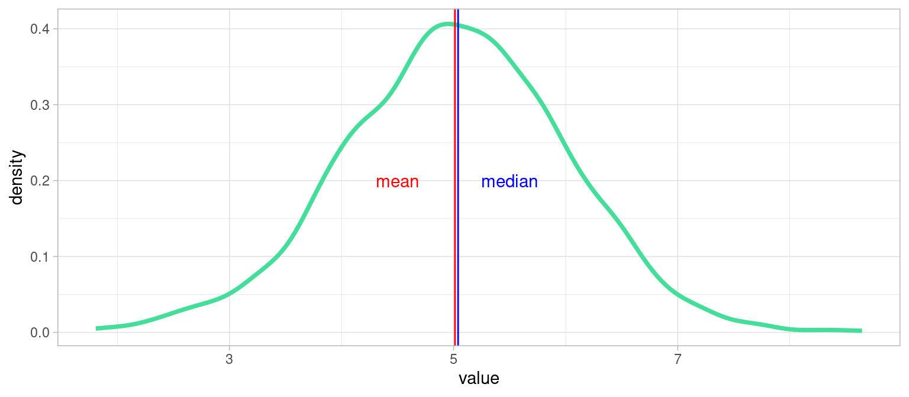
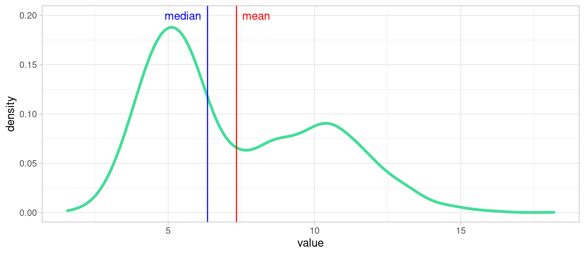

Chapitre 4 La Tendance
Les distributions de variables dans les données du monde réel sont rarement constantes ou uniformes. Elles exhibent ce qu’on appelle une tendance, c’est-à-dire une valeur autour de laquelle se retrouvent la majorité des individus.
Si la forme de la distribution est suffisamment régulière, cette tendance peut servir de résumé statistique de la variable de la population.
Les indicateurs de tendance centrale de la distribution d’une variable sont la moyenne et ses variantes, la médiane et le mode.
4.1 Moyenne
La moyenne d’une variable \(x\) , notée \(\bar{x}\) , s’écrit :
\[ \bar{x} = \frac{1}{n}\sum_{i=0}^{n} x_i \]
4.1.1 Moyenne pondérée
Lorsque des poids \(p_i\) sont affectés aux individus, la moyenne pondérée s’écrit :
\[ \bar{x} = \frac{1}{\sum_{i=0}^n pi}\sum_{i=0}^{n} p_i x_i \]
4.1.2 Avantages et inconvénients de la moyenne
Avantage : chaque valeur compte dans le calcul.
Inconvénients :
- sensibilité aux valeurs extrêmes
- pas de signification directe sur les variables quantitatives discrètes (e.g. «2.5 enfants/femme» )
Pour y remédier :
- exclure les outliers, ou restreindre les valeurs considérées par filtrage
- utiliser un autre estimateur, par exemple la médiane
- étudier la distribution des valeurs et en cas de multi-modalités, opérer une classification
4.1.3 Autres Moyennes
4.1.3.1 Moyenne geométrique:
Elle s’écrit ainsi :
\[ \bar{x} = \sqrt[n]{\prod _{i=0}^{n} x_i}\]
Elle a l’avantage d’être moins sensible à la présence de valeurs extrêmes que la moyenne algébrique.
4.1.3.2 Moyenne quadratique (RMS)
Elle s’écrit :
\[\bar{x} = \sqrt{\frac{1}{n}\sum _{i=0}^{n} x_i^2} \]
4.1.3.3 Hors sujet : Moyenne glissante
Ce n’est pas une moyenne comme les autres, au sens où elle ne résume pas toute une série de valeurs
Dans le cas de séries temporelles (i.e. valeurs successives de la même variable), la moyenne glissante est calculée sur une «fenêtre» de \(n\) valeurs consécutives. La fenêtre est centrée sur l’instant auquel on calcule la valeur de la moyenne.
Par exemple, pour une moyenne glissante sur une fenêtre de taille 10, la valeur en chaque points \(x_i\) à la position \(i\) dans la série temporelle (on suppose que \(i>5\)) vaut la moyenne des de \(x_i\) et des 10 valeurs environnantes, 5 en avant , 5 en arrière :
\[\bar{x} = \frac{1}{11}\sum _{j=i-5}^{j=i+5} x_j\]
4.2 Mode
Le mode d’une variable est la valeur la plus fréquente ( d’effectif maximum) d’une variable.
Si la variable est quantitative et continue, il faut découper l’étendue de la variable (la différence entre la valeur maximum et minimum) en intervalle égaux , puis réaliser une classification des individus dans ces intervalles et un comptage des effectifs de chaque classe. Dans ce cas, le mode est la moyenne des valeurs min et max des bornes de la classe de plus grand effectif.
C’est exactement ce que fait un histogramme graphiquement !
4.2.1 Avantages et inconvénients du mode
Avantages :
- Peu sensible aux valeurs extrêmes (moins sensible que la moyenne)
- il s’interprète facilement : c’est la situation la plus fréquente dans la population
Inconvénients :
le mode ne dépends pas de toutes les observations : la modification d’une seule valeur n’entraîne pas une modification du mode. Cet inconvénient explique sa robustesse aux valeurs extrêmes
4.3 Médiane
La médiane est la valeur qui partage une série de valeurs en deux sous-ensembles d’égal effectif
Comme en géométrie, la médiane est la valeur de la variable qui est la plus proche de toutes les autres.
4.3.1 Étapes de calcul
Déterminer la médiane d’un ensemble de valeurs est très simple :
- Ordonner les \(n\) valeurs de \(V\) selon un ordre croissant
- Calculer le rang \(rg=\frac{n+1}{2}\)
- si \(n\) impair, la valeur médiane est \(V[rg]\). Si \(n\) est pair, la valeur médiane est entre deux valeurs et est égale à la moyenne de \(V[\frac{n}{2}]\) et \(V[\frac{n}{2}-1]\)
Dans cet algo , on suppose qu’on compte les cellules d’un tableau à partir de 0, comme en python. En R, où on compte les cellules à partir de 1 , il faudrait ajouter 1 à tous les indices.
4.3.2 Avantages et inconvénients de la médiane
Avantages :
- Souvent plus pertinente que la moyenne
- Peu sensible aux valeurs extrêmes: quelques valeurs très fortes ou très faibles ne modifie pas sa valeur
- elle s’interprète facilement : comme elle divise en deux la distribution, un individu sur deux a une valeur inférieure (respectivement supérieure) à la médiane.
Inconvénient :
Comme le mode, la médiane ne dépend pas de toutes les observations : la modification d’une seule valeur n’entraine pas une modification de la médiane.
Notons que la robustesse de la médiane est bien utile dans le cas de distribution particulièrement asymétriques, où la moyenne est dégradée par les valeurs extrêmes, à droite (valeurs très élevées) ou à gauche (valeurs très faibles).
Par exemple , pour les revenus mensuels en équivalent temps plein en France en 2016 : le revenu mensuel net moyen est de 2 238 €, le revenu mensuel net médian est de 1 789 € : selon l’[https://www.insee.fr/fr/statistiques/4277680?sommaire=4318291]
Supposons qu’on cherche à évaluer si un salaire mensuel net équivalent temps plein de 2000€ est un bon salaire en France, sans définir trop rigoureusement ce qui signifie «bon».
- 2000€ est inférieur à la moyenne du pays, on peut le considérer comme trop bas pour être «bon».
- 2000€ est supérieur au salaire médian, il est supérieur à (au moins) la moitié des salaires du pays, et on peut le considérer comme un «bon» salaire.
Cette double interprétation est due au fait que certains salaires très élevés, mais d’effectifs peu nombreux, tirent la distribution du salaire vers la droite, et avec eux, la moyenne.
4.4 Quelle mesure de tendance choisir ?
Tout dépend de la distribution !
(cette réponse est malheureusement quasiment universelle, d’où l’importance de toujours représenter visuellement les variables pour décider en connaissance de cause )
De manière générale , quand les distributions ne sont pas trop «biscornues» (déformées, asymétriques, multimodales), la médiane est un bon choix par défaut.
Également, observer l’écart numérique entre médiane et moyenne peut être une bonne heuristique pour évaluer rapidement l’asymétrie d’une distribution.
Pour les variables quantitatives :
Si la distribution n’a pas de longue queue (on dit aussi traîne) , la moyenne et la médiane sont adaptées.
Si la distribution exhibe plusieurs modes , il faut réaliser une classification puis calculer médiane et moyenne pour chaque classe.
Pour les variables qualitatives :
- Le mode est privilégié pour les variables nominales c’est-à-dire des variables qualitatives dont les modalités ne sont pas ordonnées, et si on désire considérer «le cas le plus fréquent».
4.4.1 Exemple idéal: Distribution unimodale symétrique
xx <- data.frame(value=rnorm(9000,mean = 5, sd = 1))
plot1 <- ggplot(xx)+
geom_line(aes(x = value),stat = "density", color="#44DD99", lwd= 1.3)+
geom_vline(xintercept = mean(xx$value), color="red")+
geom_vline(xintercept = median(xx$value) + 0.02,color="blue")+
annotate("text", x=c(4.5,5.5), y=c(0.2,0.2), colour=c("red","blue"),label=c("mean", "median"))+
theme_light()
plot1
Dans ce cas tout se passe bien : la distribution ne présente qu’un seul pic, et est symétrique : médiane et moyenne sont confondues, ce sont deux bons résumés de la tendance de cette variable, et on peut choisir l’une ou l’autre.
4.4.2 Exemple d’un cas délicat : distribution bimodale
Parfois une variable peut être bimodale, c’est-à-dire lorsque la population est regroupée autour de deux tendances, dans deux intervalles de valeurs majoritaires. Voici un exemple:

Que choisir dans un tel cas : moyenne ou médiane ?
… Ni l’une ni l’autre , on voit qu’elles sont peu informatives. Il faudrait dans ce cas établir un seuil et raisonner sur les deux sous-populations.